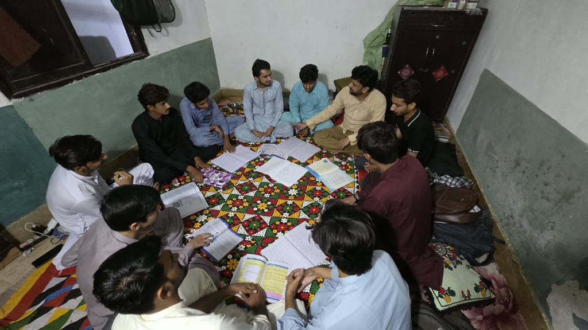
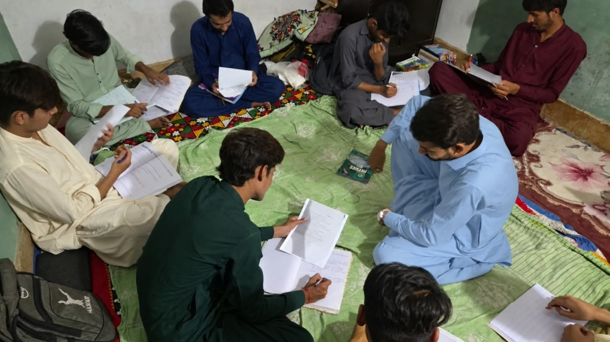
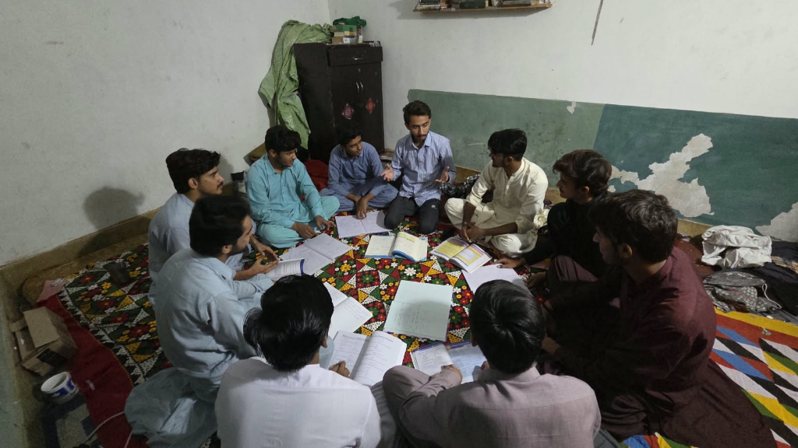
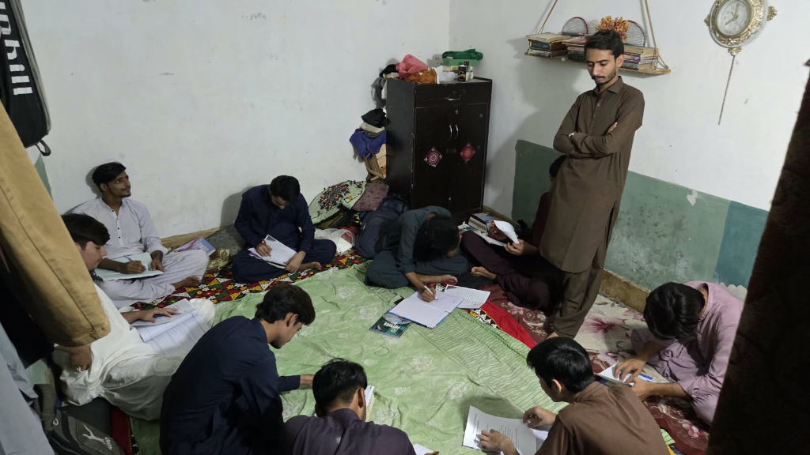
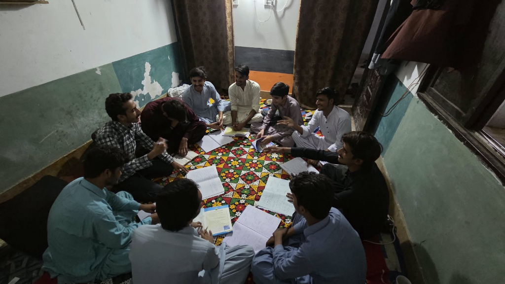
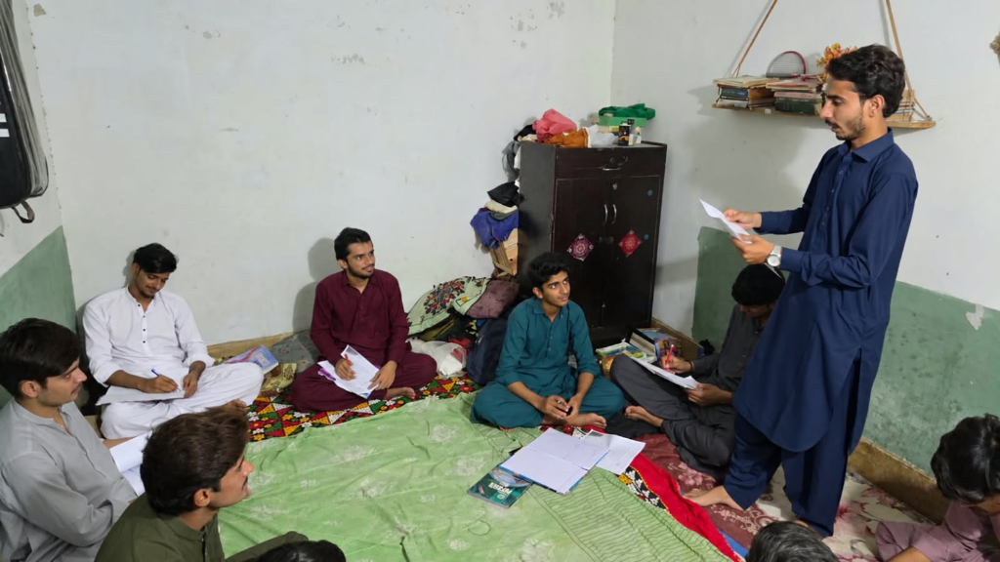

I am Waliullah Magsi, an undergraduate student of BS English, specializing in Applied Linguistics at the University of Sindh, Jamshoro. My academic interests include English language learning and teaching, grammar, communication, vocabulary development, and the practical application of linguistic knowledge.
Through my teaching internship at Atom Academy, Hyderabad (organized in a dedicated home tuition setup with 10 students per batch), I have had the opportunity to connect my academic learning with actual teaching practice. During the internship, I have been teaching Basic English Grammar, conducting reading and vocabulary activities, and helping students prepare for university entry tests. This experience has helped me understand students’ learning needs, improve my teaching and communication skills, and develop greater confidence as a prospective language teacher.
Host: Atom Academy Hyderabad (Home Tuition Setup · 10 Students/Batch)
Supervised by Sir Kashif Magsi
Academic Affiliation: IELL, University of Sindh, Jamshoro
Pre-service English language educator conducting a 60-hour professional teaching internship at Atom Academy Hyderabad under the direct host supervision of Sir Kashif Magsi. Academic candidate of BS English Part-III at the Institute of English Language & Literature (IELL), University of Sindh, Jamshoro.
Official verification of host placement at Atom Academy Hyderabad and academic coordination under the University of Sindh.
Atom Academy Hyderabad. Reputable academic institution in Hyderabad providing premier coaching for secondary, intermediate, and competitive university entrance exams.
Sir Kashif Magsi, Host Supervisor at Atom Academy Hyderabad. Directly assigns tasks, monitors instructional delivery, reviews lesson plans, and evaluates trainee performance.
Institute of English Language & Literature (IELL), University of Sindh, Jamshoro. Coordinated by Dr. Sumera Bhanbhro (ELT) and Madam Bakhtawar Jaleel (Applied Linguistics).
Structured across the 3 internship weeks at Atom Academy Hyderabad: 6 dedicated photographic evidence boxes (Teaching Photos & Student Activity Photos) plus 3 outcome graph boxes. Click any photo box to enlarge, or replace with your own photos.

Teaching Photo 🔍 Zoom / ViewWaliullah introducing sentence structure, noun classifications, and basic grammar concepts in an interactive study circle format.
📷 Photo Slot 1 (Week 1 Teaching Photo)
Activity Photo 🔍 Zoom / ViewStudents completing independent sentence analysis, parts of speech identification exercises, and peer grammar verification worksheets.
📷 Photo Slot 2 (Week 1 Activity Photo)Student Understanding Rate

Teaching Photo 🔍 Zoom / ViewWaliullah presenting relational grammar, prepositions, conjunctions, and entry test preparation formats on the study circle floor.
📷 Photo Slot 3 (Week 2 Teaching Photo)
Activity Photo 🔍 Zoom / ViewStudents completing weekly grammar practice tests and Sindh University entry test mock questions under active teacher supervision.
📷 Photo Slot 4 (Week 2 Activity Photo)Practice Test Score Range (Marks)

Teaching Photo 🔍 Zoom / ViewWaliullah guiding tense timelines, verb forms, and comprehensive entry test English review through interactive group dialogue.
📷 Photo Slot 5 (Week 3 Teaching Photo)
Activity Photo 🔍 Zoom / ViewStudents practicing formal self-introductions, reading aloud, and completing final review evaluation worksheets under oral assessment.
📷 Photo Slot 6 (Week 3 Activity Photo)Exam Readiness & Mastery
Meticulously maintained daily activity logs from Day 1 (04-09-2026) to Day 20 (03-10-2026) at Atom Academy Hyderabad under Sir Kashif Magsi. Total logged: 46 Hours of 60 Hours total requirement (in progress).
| Day | Date & Day | Activities Performed | Skills Developed | Hours | Status |
|---|
Official reflective logs submitted for Week 01, Week 02, and Week 03 documenting pedagogical growth, test scores, error diagnosis, and adaptive instruction.
This week, I gained practical experience in planning and teaching a Basic English Grammar course. I began by introducing myself and the course routine, creating a WhatsApp group for academic queries, and assessing students' reading and basic grammar levels. During the week, I taught kinds of sentences, phrases and clauses, parts of speech with a focus on nouns and pronouns, and continued reading and vocabulary practice. I also supported the Sindh University entry-test group through entry-test preparation practice. Conducting a weekly test helped me understand how assessment can reveal students' strengths, weaknesses, and areas that need revision. I learned that students respond better when explanations are supported with simple examples, questions, reading practice, and opportunities to participate. I also improved my classroom communication, grammar teaching, time management, and ability to clarify students' confusion. Overall, the first week helped me understand that effective teaching requires preparation, observation, regular assessment, and adjustment according to students' learning needs.
Next week, I will make the lessons more student-centred by giving students more chances to answer questions, make their own sentences, and practise grammar individually. I will use shorter and clearer instructions, revise difficult concepts before introducing new ones, and pay closer attention to students who need extra support. I will also manage time more carefully so that grammar teaching, reading, vocabulary, and entry-test practice all receive proper attention. I will use brief activities and follow-up questions to check understanding during the lesson instead of waiting until the weekly test.
Official signed logs, reflective reports, and academic guidelines submitted for the 60-hour teaching internship at Atom Academy Hyderabad.
Internship_Log_Day_20_Fresh_Copy.pdf
Waliullah_Internship_Weekly_Reflective_Log_Week_01.pdf
Waliullah_Internship_Weekly_Reflective_Log_Week_02.pdf
Waliullah_Internship_Weekly_Reflective_Log_Week_03.pdf
Internship Guidelines.pdf · University of Sindh
Official Academic Submission Summary
Host supervisor evaluation from Sir Kashif Magsi at Atom Academy Hyderabad on the official IELL evaluation rubric.
| Evaluation Criterion | Max Marks | Assigned Marks |
|---|---|---|
| Attendance & Punctuality | 2 | 2 / 2 (100% Punctual) |
| Professional Conduct & Ethics | 2 | 2 / 2 (Exemplary) |
| Communication Skills | 3 | 3 / 3 (Clear & Engaging) |
| Teamwork & Student Rapport | 2 | 2 / 2 (Highly Collaborative) |
| Quality of Assigned Work & Teaching | 4 | 4 / 4 (Exceptional Delivery) |
| Initiative & Problem Solving | 3 | 3 / 3 (Proactive Feedback) |
| Responsibility & Documentation | 2 | 2 / 2 (Meticulous Logbook) |
| Adaptability in Instruction | 2 | 2 / 2 (Student-Centred Shift) |
| Overall Performance | 2 | 2 / 2 (Distinguished) |
| Total Marks Awarded | 20 | 20 / 20 (Grade: A+) |
Formal internship report synthesis (50 marks) and 5-minute panel defense outline (30 marks) fulfilling the degree requirement.
The 60-hour teaching internship is hosted at Atom Academy Hyderabad under the mentorship of Host Supervisor Sir Kashif Magsi, in coordination with the Institute of English Language & Literature (IELL), University of Sindh. To date, 46 hours have been completed across 20 verified working days, with 14 hours remaining to complete the 60-hour target.
The curriculum focuses on two core pedagogical streams: a foundational Basic English Grammar Course and targeted Sindh University Entry Test Preparation. Instruction covers syntax (sentence types, clause boundaries), morphology (8 parts of speech, pronouns, modifiers, prepositions, conjunctions), non-finite verbs (gerunds and participles), and the 12-tense timeline system.
Formative Saturday testing yielded student scores ranging from 55 to 75 marks. 1-on-1 feedback and diagnostic script reviews conducted at Atom Academy Hyderabad have systematically identified learning gaps and built learner confidence.
5-Minute Multimedia Defense prepared for the Faculty Panel of Teachers at IELL:
Available for English Language Teaching, curriculum development, Sindh University entry test coaching, and educational collaborations.